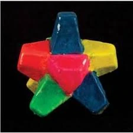

Everlasting Gobstopper

Description:
The Everlasting Gobstopper is a never-ending cascade of flavor. You can suck on it forever and it'll never shrink or
lose flavor! It's a truly marvelous invention, courtesy of Willy Wonka.
Ingredients:
- A small porous rock (such as pumice)
- High fructose corn syrup (1 liter)
- Food coloring of your choice (200ml)
- Beeswax (20 grams)
Steps:
- Chisel rock into desired shape
- Dunk rock into corn syrup
- Remove and apply layer of food coloring
- Apply layer of melted beeswax
- Cool until beeswax is solid
- Repeat steps 2 through 5 1000 times or until out of materials
- Do not bite!